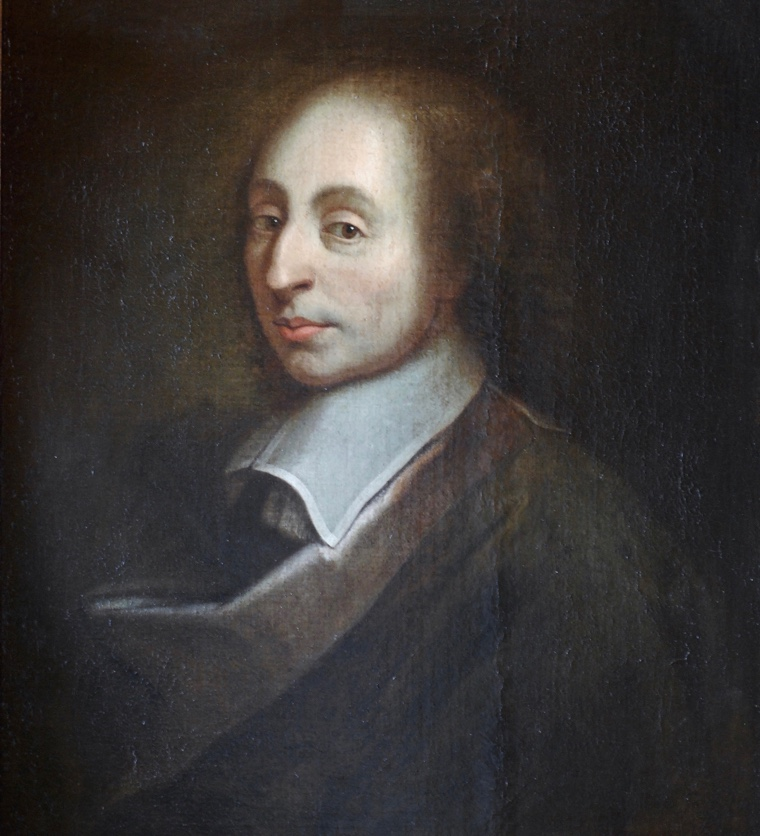

Two arguments say yes, and they are the most famous ones there are: Pascal's bet, and C.S. Lewis on the radio. Each is sharper than its critics admit, and each has a hole its fans never mention. Here they are at full strength, holes and all.
A distillation /two arguments, both holed/20 sources/ 20 min read
A coin is spinning in the air. Heads, God exists. Tails, he doesn't. You would love to wait and see how it lands before you commit to anything, but you are not allowed to. The coin never comes down in your lifetime, and you have to live your one life now, betting your days on the heads world or the tails world. There is no third life where you stand by the table with your hands in your pockets, waiting politely for the universe to show its work.
That trap is the work of a French mathematician named Blaise Pascal, scribbled in notes he never finished, around 1660. It is one of the two most famous attempts to reason a person all the way to God. The other came three hundred years later, in the voice of an Oxford professor talking into a BBC microphone while German bombs fell on London. His name was C.S. Lewis.
This post builds both arguments at full strength, the way their smartest defenders mean them, so that a believer would nod along. Then it leaves the strongest objection to each one sitting in the room, because each has one, it is famous, and pretending otherwise is how you end up believing something for a bad reason. By the end you should understand these two arguments better than most of the people who quote them, on either side.
One thing up front, because it saves a lot of arguing. Neither of these is a proof. Neither one has ever turned a committed atheist into a believer, and that was never the job. They are something stranger and more useful: one is an argument about how to bet when you cannot know, and the other is an argument about what you are actually saying when you call Jesus a nice moral teacher. Both land a real punch. Both miss in a way you can see if you look. Watch for the miss.
The bet
The man who turned God into a wager
Pascal had the kind of resume that makes you a little annoyed. As a teenager, to save his father (a tax official) from drowning in arithmetic, he built one of the first mechanical calculators, a brass box of gears that could carry the tens for you. In his early thirties, trading letters with another mathematician, Pierre de Fermat, about how to fairly split the pot in a gambling game cut short, he more or less invented the mathematics of probability. He understood odds better than almost anyone alive.
Then, on the night of November 23, 1654, something happened to him that he never fully explained. He wrote a few burning lines about fire and certainty and joy on a scrap of parchment, sewed the scrap into the lining of his coat, and wore it, hidden, for the rest of his life. A servant found it after he died. Whatever it was, it turned the odds-maker's mind toward God.
He set out to write a great defense of the Christian faith and never finished it; he died at 39, his body worn out. What survived were hundreds of notes, scribbled and half-sorted, found in bundles. Published after his death, they are called the Pensées, French for "thoughts." One of them, known by its first two words, Infini rien ("Infinity, nothing"), holds the most famous bet in the history of religion.
Pascal opens by giving away something most believers will not. He says reason cannot settle the question at all.
Reason can decide nothing here ... A game is being played at the extremity of this infinite distance where heads or tails will turn up. What will you wager?Pensées, fragment 233
Fine, you say, then I will not bet. I will suspend judgment and wait for better evidence. Pascal slams that exit shut.
You must wager. It is not optional. You are embarked.Pensées, fragment 233
You are already on the ship, already at sea. Living as though there is no God is itself a bet on tails; you have just placed it without noticing. There is no neutral seat. Refusing to choose is a way of choosing. So if you have to bet, says the man who helped invent probability itself, let us at least do the math.
Here is the math, and this is the part that was genuinely new. Lay out the four ways the bet can go.
God exists
God does not
You bet on God
Infinite gainan eternity of happiness
A small losssome pleasures, a few Sundays
You bet against
Infinite lossyou gambled away everything
A small gainthose same pleasures, kept
The one thing you can never see is which column is real. Pascal's claim: you do not need to. Weigh each outcome by how good it is, and one square is so much bigger than the others that it decides the bet by itself.
Bet on God and he is real, and you win what Pascal calls "an infinitely happy life." Bet on God and he is not, and you have lost what, a few Sunday mornings and some pleasures you would have had anyway. Bet against God and he is real, and you have lost everything. Bet against and you are right, and you have gained those same small pleasures. Line the payoffs up and one of them is not like the others.
If you gain, you gain all; if you lose, you lose nothing. Wager, then, without hesitation that He is.Pensées, fragment 233
What Pascal is doing here, weighing each outcome by how likely and how good it is and then picking the best average bet, is now a standard tool taught to every economist and card player. It is called expected value, and this scribbled religious note is roughly where it begins. The historian Ian Hacking called the wager "the first well-understood contribution to decision theory." Pascal worked out a piece of math partly to argue you into church.
There is an obvious objection, and Pascal, to his credit, goes digging at it himself. Say the math convinces you. You still cannot just decide to believe in God the way you decide to raise your hand. Belief is not a lever you pull. His imagined skeptic says exactly this:
I am so made that I cannot believe. What, then, would you have me do?Pensées, fragment 233
Pascal's answer is the strangest and most modern part of the whole thing: stop trying to think your way in, and start acting your way in. Go through the motions. Kneel down with the people who already believe, and do what they do.
Follow the way by which they began; by acting as if they believed, taking the holy water, having masses said ... Even this will naturally make you believe, and deaden your acuteness.Pensées, fragment 233
Fake it, in other words, and the belief will grow in behind the habit. He is betting that faith is more like a skill you practice than a conclusion you reach, and that the body can lead the mind. Modern psychology, for what it is worth, half agrees: act a certain way long enough and your attitudes tend to drift to match. Pascal got there three centuries early and used it to sell holy water.

Blaise Pascal, after François II Quesnel. Palace of Versailles. Public domain.
The fine print on the bet
Where the wager falls apart
It is a beautiful argument, and serious people have spent 350 years trying to climb out of it. Three holes actually hold.
The bet has a blank where the name goes
The wager tells you to bet on God. It does not tell you which one. Pascal, a Catholic in Catholic France, quietly fills in his own. But the same math runs for any god who offers an infinite payoff: bet on Allah, bet on a jealous Zeus, bet on some god nobody has thought of yet. Worse, picture a god who sends devout Christians to hell and rewards honest doubters, the exact opposite of Pascal's. Now betting on the Christian God carries an infinite downside, and the wager points the other way. It tells you to bet on infinity but cannot tell you which infinity, and the infinities cancel. The philosopher Denis Diderot made the point a century later: an imam could reason exactly this way, and does.
The infinity jams its own math
Pascal's whole engine runs on one number being infinite: the payoff of heaven. That number turns out to be poison to the very math he invented. If the prize is genuinely infinite, then any bet with even a sliver of a chance at it also has infinite value. Believe with your whole heart: infinite payoff. Believe lazily, on alternate Tuesdays: smaller chance, but a smaller slice of infinity is still infinity. Flip a coin and convert only if it lands heads: still infinite. Once infinity is on the table, every strategy that gives God any chance at all ties for first place, and the math can no longer tell you to actually believe rather than flip a coin. The philosopher Alan Hájek, the wager's sharpest modern critic, laid this out in detail. In his words, "all hell breaks loose." The infinite prize does not strengthen the bet. It breaks it.
God can probably see you doing this
Then there is the small matter of what God makes of the whole scheme. The wager asks you to believe as a hedge, the way you buy insurance, eyeing the payout. But the God of Christianity is supposed to see straight through you, all the way to the motive. Would such a God be fooled by, or pleased with, a person whose "belief" is really a bet on a reward? William James, the philosopher and psychologist, doubted it. A God worth the name might well prefer the honest atheist to the calculating believer. Pascal's holy-water routine is meant to ripen that cold calculation into something sincere, and maybe it does. But you have to begin by trying to manufacture a belief for a prize, and there is something self-defeating in that, like trying to fall asleep by concentrating very hard on falling asleep.
The radio talks
The professor on the air
The second argument arrives by radio. In 1941, with Britain in the war and London under the Blitz, the BBC went looking for someone who could talk about Christianity to a frightened country without sounding like a vicar. They found an Oxford professor of medieval literature named C.S. Lewis, a former atheist who had argued his own way back to belief in his thirties. He gave a run of fifteen-minute wartime talks, plainspoken and a little gruff, and millions tuned in. Cleaned up and collected, they became one of the most read works of popular Christianity of the century, a book called Mere Christianity.
That word "mere" is doing real work. Lewis is not defending Catholicism, or his own Anglican church, or any one denomination. He is after the common core they all share, the plain claims a Baptist and a Greek Orthodox and a Quaker would all sign. He had a famous picture for it. Christianity is a house, and "mere" Christianity is the entrance hall.
It is more like a hall out of which doors open into several rooms ... it is in the rooms, not in the hall, that there are fires and chairs and meals. The hall is a place to wait in, a place from which to try the various doors, not a place to live in.Mere Christianity, preface
Get someone into the hall, Lewis figured, and they can find a room later. His two most famous moves are both attempts to walk you in out of the cold. The first is about right and wrong. The second is about who Jesus was.
Move one: the argument from right and wrong
Lewis starts where everybody has stood: in the middle of an argument.
Every one has heard people quarreling ... "How'd you like it if anyone did the same to you?" ... "That's my seat, I was there first" ... "Come on, you promised."Mere Christianity, Book I, "The Law of Human Nature"
Listen to how people fight, Lewis says, and you notice something odd. The man who says "that's my seat" is doing more than reporting that he is annoyed. He is appealing to a rule he expects the other guy to already know and to feel the pull of. And the other guy almost never says "what rule? I recognize no rule." He says he got there first, or he was saving it. He argues that he is not really breaking the standard. Both men are bowing to the same invisible referee even as they fight in front of it. Lewis thought that referee was a clue, maybe the biggest one we have, about what kind of universe this is. He boils it down to two stubborn facts: people everywhere feel they ought to behave a certain way, and people everywhere fall short of it.
Human beings, all over the earth, have this curious idea that they ought to behave in a certain way, and cannot really get rid of it ... they do not in fact behave in that way.Mere Christianity, Book I, "The Law of Human Nature"
He heads off the obvious objection, that this is just herd instinct, evolution wiring us to cooperate. Lewis says look closer:
Feeling a desire to help is quite different from feeling that you ought to help whether you want to or not.Mere Christianity, Book I, "Some Objections"
When you hear someone in danger, he says, you feel two tugs at once: the urge to help, and the urge to stay safe. The thing that steps in and says "help, even though you are scared" is a third thing, judging between the two instincts. It cannot itself be just another instinct; it is the rule that ranks them. And a rule like that, a real "ought" pressing on every human everywhere, points past the physical world to something mind-like behind it. Push the argument as far as it goes and here is where it lands:
All I have got to is a Something which is directing the universe, and which appears in me as a law urging me to do right and making me feel responsible and uncomfortable when I do wrong.Mere Christianity, Book I, "What Lies Behind the Law"
This is where an honest reader has to push back, and the hardest push comes from biology. We have a good, evidence-backed story now for where the moral sense comes from, and it needs no lawgiver. Creatures that cooperate, that feel guilt, that punish cheats and protect their kin, tend to out-survive and out-breed the ones that do not. Conscience looks a great deal like a very old, very effective piece of social wiring, built by evolution and then sharpened by culture. That everyone has some version of it is exactly what you would expect from shared ancestry and shared problems, not a fingerprint of heaven.
There is a deeper problem too, old enough that the philosopher David Hume named it before Lewis was born: you cannot get from an "is" to an "ought." List every fact about how humans evolved, what brains do, what societies need, and you still have not shown that anyone truly ought to do anything. A real obligation, if there is one, does not simply drop out of the facts. That blade cuts both ways, which is why some thoughtful people still find Lewis's clue suggestive. The sheer felt weight of "ought," the sense that cruelty is genuinely wrong and not merely unpopular, is honestly hard to explain away as leftover ape behavior.
But here is the part most people who swing this argument around leave out, and Lewis did not. Even if it works perfectly, it does not get you to God. It gets you to a vague something behind the moral law. Lewis says so himself, in nearly the same breath:
We have not yet got as far as the God of any actual religion, still less the God of that particular religion called Christianity. We have only got as far as a Somebody or Something behind the Moral Law.Mere Christianity, Book I, "We Have Cause to Be Uneasy"
That is an honest man arguing. The moral law, at its absolute strongest, delivers a cosmic lawgiver of some kind, not the Father, Son, and Holy Spirit. To get the rest of the way, Lewis needs his second move.
The famous one
Liar, lunatic, lord, and the door he left shut
The second move is the one Lewis is famous for, and it is aimed at a specific, very common thing people say: that Jesus was a great moral teacher, full stop. A wise man, like the Buddha or Socrates, minus the supernatural baggage. Lewis thinks that is the one thing you are not allowed to say, and he shuts the door on it with a hard little piece of logic.
Start with what Jesus actually claimed, Lewis says, and it ran well past wise sayings. He went around forgiving people their sins, all of them, including sins committed against other people.
Unless the speaker is God, this is really so preposterous as to be comic.Mere Christianity, Book II, "The Shocking Alternative"
A man who forgives you for what you did to someone else is either speaking for God or talking nonsense, and Jesus said a great many things in that key. So the "great moral teacher" option is off the table, Lewis argues, because no merely great moral teacher talks like that. Which leaves a much harder set of choices:
A man who was merely a man and said the sort of things Jesus said would not be a great moral teacher. He would either be a lunatic, on a level with the man who says he is a poached egg, or else he would be the Devil of Hell ... Either this man was, and is, the Son of God: or else a madman or something worse ... let us not come with any patronising nonsense about His being a great human teacher.Mere Christianity, Book II, "The Shocking Alternative"
You have probably met this boiled down to three words: liar, lunatic, or lord. If Jesus claimed to be God knowing it was false, he is a liar. If he believed it and it was false, he is a lunatic, the poached-egg man. If it was true, he is lord. The first two are absurd, the argument runs, so the third one stands. Walk the doors yourself:
tap a door, or use the arrow keys
Door one
He was lying
If Jesus claimed to be God while knowing the claim was false, he was running the longest con in history, and then dying for it. Lewis's own word for this one was blunter than "liar." He called it the Devil of Hell.
The trouble is the teaching. The Sermon on the Mount is not the work of a sneering fraud, and a con man does not usually let himself be tortured to death rather than take the lie back.
Lewis wins this one. Frauds do not preach like that.
Door two
He was insane
If he sincerely believed he was God and was not, he was deluded, "on a level," Lewis says, "with the man who says he is a poached egg." A sad case, not a teacher to take seriously.
But the deluded do not usually speak with the steadiness and the shrewdness the Gospels keep showing. The man who tells the parable of the prodigal son does not read like a psychiatric ward.
Lewis wins this one too. Madmen do not argue like that.
Door three
He was telling the truth
If the claim was true, then he was exactly who he said he was: God. With liar and lunatic ruled out, Lewis says this is the only door left standing, and the tame "great teacher" was never really on offer.
It is a clean piece of logic, and if you grant the setup it holds. The whole weight of it rests on the setup.
Sound, but only as sound as the premises underneath it.
Door four
He never said it
Here is the option Lewis never sets on the table. Maybe Jesus did not make the bold claim at all, and it grew into the story afterward. The clearest "I and the Father are one" lines come from the Gospel of John, the latest of the four, written two to three generations after the crucifixion. The earliest, Mark, is far more reserved about Jesus calling himself God outright.
If the divine claim is a later development of the tradition and not a transcript of what a man said, the whole choice dissolves. There is nothing yet to be a liar, lunatic, or lord about. (A close cousin Lewis also skips: a person can be sincere, perfectly sane, and simply wrong. People are, all the time.)
The hole in the argument, and the reason scholars rate the trilemma the weakest thing Lewis built.
So the argument is real, and against its actual target, the person who wants a tame teacher-only Jesus while still keeping the Gospels, it bites hard. But it has a hole you can walk straight through, the one you just met behind door four. The three options are not the only three. There is a fourth, legend, and a fifth, honest error, and the argument pretends neither exists.
What is really holding the whole thing up is a hidden premise: that the Gospels report Jesus accurately, divine claims and all. Grant that, and the logic mostly works. But that premise is the entire question. It is exactly what a skeptic does not grant, and Lewis smuggles it in as an assumption instead of arguing for it. This is why philosophers, including plenty of Christian ones, tend to rate the trilemma the weakest of his moves. It is a strong answer to a lazy churchgoer and a weak one to a serious historian.
So, can you?
What the arguments actually do
Back to the question on the cover. Can you argue your way to God? On the evidence of the two best arguments ever built for it: no, not all the way, and yes, partway, and the space between those two is the whole interesting part.
Strip the marketing off and look at what each one really is. Pascal's wager is not a reason to think God exists. It is a reason it might be rational to bet on him anyway, and under the dated business about holy water sits something plainly true: you are spending your one life on some assumption about what is real, you cannot opt out, and that is a wager whether you ever name it or not. Lewis's arguments do not prove Christianity either. What they do is make it intellectually respectable for a person already leaning in, and they land one clean hit a skeptic should actually feel. "Just a great moral teacher" really is a dodge. The texts do not offer you that tame Jesus; you have to deal with what they actually say, and then decide whether you believe it.
Both arguments are clever. Both have a hole. But watch what happens when you try to live inside the holes. The many-gods problem sinks the wager as a proof, and you still have to bet. The legend problem sinks the trilemma as a proof, and you still have to decide what you make of the texts. The arguments fail as proofs and survive as something humbler and more honest: ways of sharpening a choice that nobody actually gets to skip.
Maybe that is the real tell. Look at what these two brilliant defenders of the faith reach for at the decisive moment, and neither of them reaches for a proof. Pascal, the man who could calculate almost anything, ends not with a flourish of logic but with an instruction to go kneel down and take the holy water until the belief comes. Lewis, having walked you to the edge of his argument, admits the moral law only gets you to "a Somebody or Something," and that the last stretch is a leap. The smartest people who ever tried to argue their way to God seem to have known, somewhere, that the final step was never an argument at all.
The fine print
Sources, and a note on the quotes
This distills two books in my own words; the arguments are Pascal's and Lewis's. Quotes are kept short and reproduced for study and comment. The Pascal lines are from W.F. Trotter's public-domain English translation, all from one fragment (numbered 233 by Brunschvicg, 418 by Lafuma, 680 by Sellier; the Pensées survive as loose, unordered paper slips, so every editor numbers them differently). The Lewis lines were checked word for word against full-text editions of Mere Christianity and are cited by book and chapter. Where an original uses a dash, the site renders it as a comma or an ellipsis, with no change to the words. No em dashes, anywhere.
The full list, 20 sources
Blaise Pascal.Pensées. Trans. W.F. Trotter (the public-domain English text). Every Pascal quote here is from the single "wager" fragment, Infini rien, no. 233 in Trotter's numbering. Project Gutenberg
The wager, set up. "Reason can decide nothing here ... heads or tails will turn up. What will you wager?" and "You must wager. It is not optional. You are embarked." Both Pensées 233.
The payoff. "If you gain, you gain all; if you lose, you lose nothing. Wager, then, without hesitation that He is," and the prize as "an infinitely happy life." Pensées 233.
Belief by habit. "I am so made that I cannot believe," answered by "acting as if they believed, taking the holy water, having masses said ... Even this will naturally make you believe, and deaden your acuteness." Pensées 233.
Pascal's life. Born 1623, died 1662 at 39; the calculating machine (begun 1642) for his father's tax work; the "Night of Fire," 23 November 1654, and the memorial sewn into his coat; the Jansenists of Port-Royal; the unfinished Apology for the Christian Religion published as the Pensées in 1670. MacTutor
Probability's birth. The 1654 Pascal to Fermat letters on the "problem of points," generally credited as the start of mathematical probability and the groundwork under the wager. overview
"First well-understood contribution to decision theory." Ian Hacking, The Emergence of Probability (1975), p. viii, quoted in the SEP entry above. The wager contains the first clear use of expected-value reasoning. SEP
The many-gods objection. The wager cannot say which god to bet on, and a rival god could reward disbelief; Denis Diderot's version, that an imam could argue the same way. SEP, "the many Gods objection"
The math breaks. Alan Hájek, "Waging War on Pascal's Wager," The Philosophical Review 112 (2003): infinite utility lets mixed strategies (even a coin flip) also score infinity, so the wager no longer favors belief. "All hell breaks loose." paper
The mercenary objection. A God who reads the heart might not reward belief adopted as a hedge; noted by William James. SEP
C.S. Lewis.Mere Christianity (1952), assembled and revised from BBC wartime radio talks given 1941 to 1944. Quotes cross-checked against full-text editions. overview
"Mere" Christianity, the hall. "It is more like a hall out of which doors open into several rooms ... The hall is a place to wait in ... not a place to live in." Mere Christianity, preface.
The moral argument. The quarrelling opener and the two points ("this curious idea that they ought to behave in a certain way"). Mere Christianity, Book I, ch. 1, "The Law of Human Nature."
Not herd instinct. "Feeling a desire to help is quite different from feeling that you ought to help whether you want to or not." Mere Christianity, Book I, ch. 2, "Some Objections."
Where the moral argument lands. "A Something which is directing the universe" (Book I, ch. 4, "What Lies Behind the Law") and his caution, "We have only got as far as a Somebody or Something behind the Moral Law," not yet the God of Christianity (Book I, ch. 5, "We Have Cause to Be Uneasy").
The trilemma. The forgiveness-of-sins setup ("so preposterous as to be comic") and the full "poached egg / Devil of Hell / Son of God: or else a madman or something worse" passage. Mere Christianity, Book II, ch. 3, "The Shocking Alternative."
The slogan and its history. Lewis did not write "liar, lunatic, or lord"; that phrasing was popularized by Josh McDowell (Evidence That Demands a Verdict, 1972), and the fork itself predates Lewis (John Duncan, 1859). Lewis's trilemma
The legend objection. The Gospel of John (the highest, clearest divinity claims) is dated c. 90 to 110 CE, latest of the four; Mark (c. 70 CE) is earliest and more reserved, so the explicit claim may be a later development. on John; the is/ought gap is David Hume's, from A Treatise of Human Nature (1739).
The painting and the portrait. Thumbnail: Georges de La Tour, The Cheat with the Ace of Diamonds (c. 1636, Louvre). In-text: a 17th-century portrait of Pascal (after François II Quesnel, Versailles). Both public domain, via Wikimedia Commons.
{kind=link}